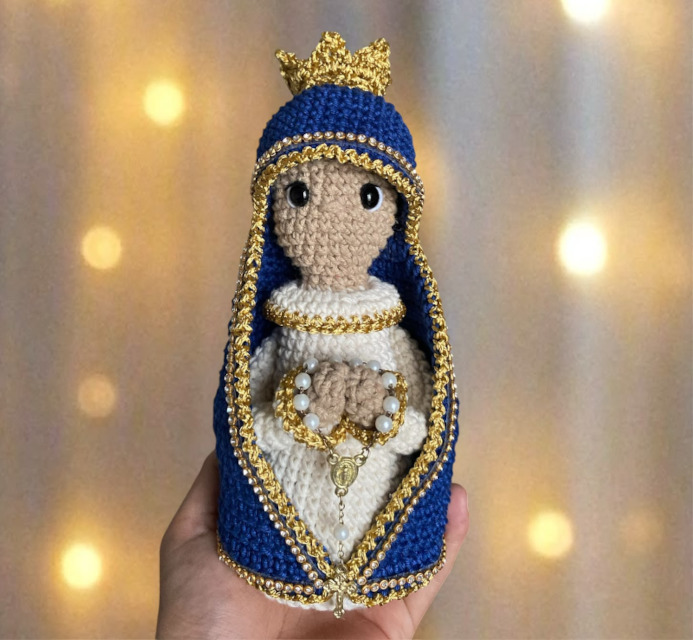

Santinha de Amigurumi com Terço
Receita passo a passo da Mini Nossa Senhora Aparecida com terço em crochê. Um modelo delicado e rápido de tecer.
Aprenda a tecer lindos bichinhos de crochê com nossos tutoriais detalhados, do anel mágico aos acabamentos. Padrões perfeitos para iniciantes e artesãos profissionais!
Quero Minhas Receitas GratuitasNa Ticia Ávila Artes, transformamos fios e agulhas em afeto através do crochê japonês. Nossos gráficos e receitas exclusivas são minuciosamente testados, trazendo técnicas detalhadas com pontos baixos, aumentos e diminuições sob medida. Desenvolvemos este espaço para apoiar entusiastas iniciantes que desejam aprender e artesãs experientes que buscam peças perfeitas para vender.
Receita passo a passo da Mini Nossa Senhora Aparecida com terço em crochê. Um modelo delicado e rápido de tecer.

Receita rápida de chaveiro de abelha em crochê. Padrão perfeito para iniciantes, lembrancinhas e vendas rápidas.

Receita exclusiva em crochê inspirada no líder do grupo coreano BTS. Boneco de crochê detalhado passo a passo para fãs de K-Pop.

Aprenda a tecer a capivara de crochê, o bichinho mais querido do Brasil. Inclui dicas de enchimento e colocação de olhos de segurança.

Tutorial detalhado para confeccionar uma versão mini e delicada da Santa Aparecida em crochê. Perfeita para chaveiros e oratórios.

Padrão de crochê ilustrado para criar a Vaquinha Amorinha. Um bichinho de crochê charmoso e excelente para decoração infantil.

Combo especial com duas receitas de crochê em um único passo a passo: aprenda a tecer o Banguela e a Fúria da Luz.

Receita completa para tecer uma linda imagem religiosa com acabamento premium. Altura final da peça: aproximadamente 8cm.

Passo a passo exclusivo para criar o monstrinho mais querido das telas em crochê. Tamanho final da peça tecida: 14cm.
Dúvidas sobre os pontos, materiais ou quer compartilhar suas peças prontas conosco? Siga nosso perfil oficial no Instagram e envie uma mensagem. Vamos tricotar e papear juntos!